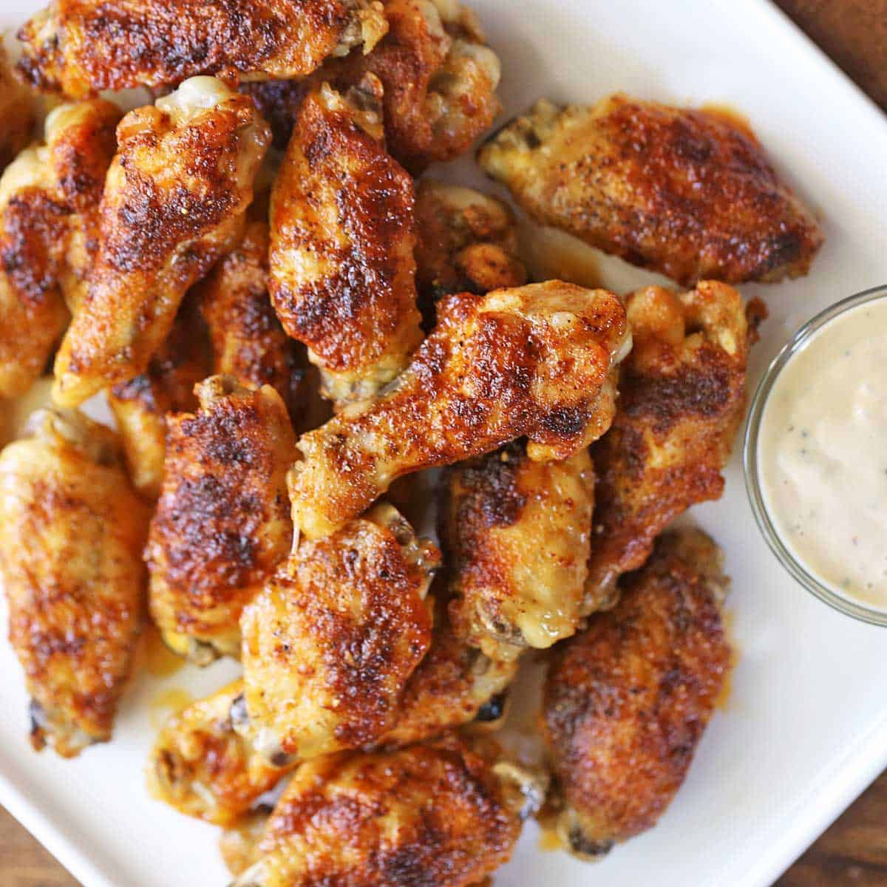

How to Make: Chicken Wings
Chicken wings - everyone's favorite finger food! Perfect for big events or dinner for the family.
All you'll need are the wings, seasoning, and access to an oven or air fryer. Stupid easy!

Ingredients:
- Chicken wings (scale amount relative to the group's appetite)
- Desired seasonings or rubs
Instructions:
-
Step 1: Place the chicken wings on a baking sheet or cutting board and use
paper towels to thoroughly dry. The dryer the wings, the crispier they will get.
-
Step 2: Liberally season the wings on both sides with your desired rub.
Preheat the oven to 400C. Place wings on a wire rack over a baking sheet.
-
Step 3: Once the oven has been preheated, insert the wings and set a timer for
20 minutes. Note that the total cook time will be 40 minutes.
-
Step 4: When the timer is complete, pull the wings out and flip. This will help
to evenly crisp both sides of the wings. Reset the timer for another 20 minutes.
-
Step 5: Once the timer is complete, pull the wings out and cover with a sheet of
aluminum foil. Let rest for 5-8 minutes.
-
Step 6: Serve and enjoy!
Notes:
If you don't have access to a stove, an air fryer is a perfectly acceptable substitute. Follow the
above steps but adjust the cook time relative to your air fryer's effective cook speed. Be sure to not
overcrowd the wings in the pot for best results.